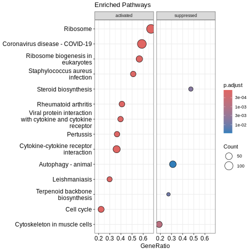
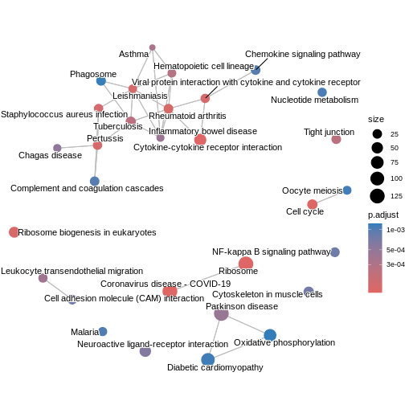
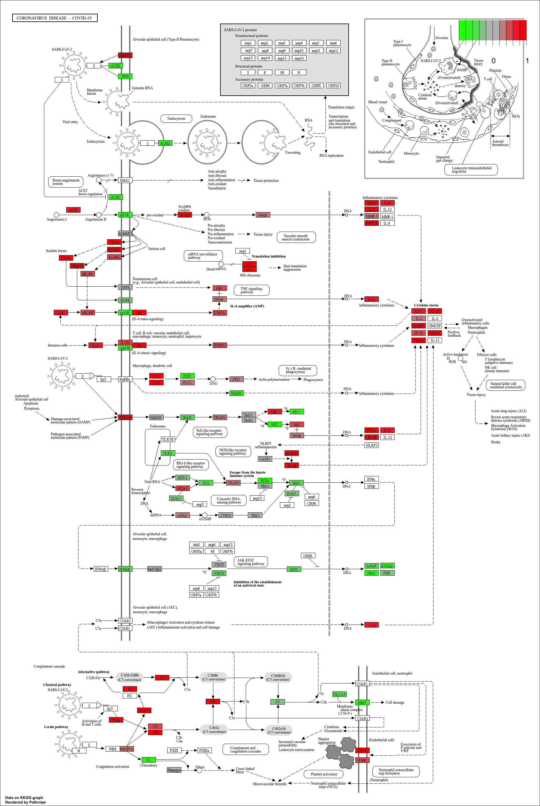

KEGG enrichment analysis with clusterProfiler
Last updated on 2026-08-03 | Edit this page
Overview
Questions
- How can we perform pathway analysis using KEGG?
- What insights can KEGG enrichment provide about differentially expressed genes
Objectives
- Learn how to run KEGG over-representation and GSEA-style analysis in R.
- Understand how to interpret pathway-level results.
- Generate and visualise KEGG pathway figures.
Introduction
The KEGG (Kyoto Encyclopedia of Genes and Genomes) database links
genes to curated biological pathways, offering a powerful foundation for
understanding cellular functions at a systems level and making
meaningful biological interpretations. clusterProfiler
allows us to access KEGG and apply both ORA (using
enrichKEGG function) and GSEA (using gseKEGG
function) to extract pathway-level insights from our RNA-seq data.
KEGG analysis
Before running enrichment, we need to confirm the correct KEGG
organism code for mouse (mmu). You can verify by
searching:
R
kegg_organism <- "mmu"
search_kegg_organism(kegg_organism, by='kegg_code')
OUTPUT
kegg_species.rda is not found, download it online...OUTPUT
kegg_code scientific_name common_name
29 mmur Microcebus murinus gray mouse lemur
34 mmu Mus musculus house mouse
9460 mmuc Mycolicibacterium mucogenicum Mycolicibacterium mucogenicumOver-representation analysis with enrichKEGG
To run ORA using KEGG database, we need to specify the gene list,
KEGG organism code and p-value cut-off. In this example, we take the top
500 genes from the ranked gene list debasal_genelist,
specify the organism code mmu (defined as `kegg_organism)
and use 0.05 as the p-value cut-off.
We can use head() function to briefly inspect the
results of enrichKEGG.
R
kk <- enrichKEGG(gene = names(debasal_genelist)[1:500],
organism = kegg_organism,
pvalueCutoff = 0.05)
OUTPUT
Reading KEGG annotation online: "https://rest.kegg.jp/link/mmu/pathway"...OUTPUT
Reading KEGG annotation online: "https://rest.kegg.jp/list/pathway/mmu"...OUTPUT
kegg_category.rda is not found, download it online...R
head(kk)
OUTPUT
category
mmu04110 Cellular Processes
mmu04060 Environmental Information Processing
mmu05323 Human Diseases
mmu04061 Environmental Information Processing
mmu04062 Organismal Systems
mmu04914 Organismal Systems
subcategory ID
mmu04110 Cell growth and death mmu04110
mmu04060 Signaling molecules and interaction mmu04060
mmu05323 Immune disease mmu05323
mmu04061 Signaling molecules and interaction mmu04061
mmu04062 Immune system mmu04062
mmu04914 Endocrine system mmu04914
Description
mmu04110 Cell cycle
mmu04060 Cytokine-cytokine receptor interaction
mmu05323 Rheumatoid arthritis
mmu04061 Viral protein interaction with cytokine and cytokine receptor
mmu04062 Chemokine signaling pathway
mmu04914 Progesterone-mediated oocyte maturation
GeneRatio BgRatio RichFactor FoldEnrichment zScore pvalue
mmu04110 19/249 157/11206 0.12101911 5.446346 8.457682 1.772195e-09
mmu04060 24/249 294/11206 0.08163265 3.673797 7.003413 3.642563e-08
mmu05323 13/249 87/11206 0.14942529 6.724738 8.080573 5.591458e-08
mmu04061 12/249 95/11206 0.12631579 5.684718 6.912393 1.186218e-06
mmu04062 16/249 194/11206 0.08247423 3.711671 5.743341 6.552072e-06
mmu04914 10/249 93/11206 0.10752688 4.839142 5.604279 3.922595e-05
p.adjust qvalue
mmu04110 5.015311e-07 3.706552e-07
mmu04060 5.154226e-06 3.809217e-06
mmu05323 5.274609e-06 3.898185e-06
mmu04061 8.392489e-05 6.202447e-05
mmu04062 3.708473e-04 2.740737e-04
mmu04914 1.850157e-03 1.367354e-03
geneID
mmu04110 17215/268697/17219/105988/12235/434175/67849/71988/17218/18817/12428/67052/77011/12534/76464/20877/17216/12532/12236
mmu04060 230405/21926/20308/21948/21942/20309/16182/16181/20296/20297/20305/232983/17082/12985/20311/12978/20310/16878/77125/14563/330122/12977/18829/29820
mmu05323 22339/21926/68775/20296/20297/14960/14961/110935/20311/20310/15001/330122/12977
mmu04061 21926/20308/16182/20296/20297/20305/20311/12978/20310/330122/12977/18829
mmu04062 20308/20309/18796/15162/20296/20297/20305/11513/22324/20311/20310/94176/432530/330122/18829/18751
mmu04914 268697/110033/12235/434175/18817/12428/11513/12534/432530/12532
Count
mmu04110 19
mmu04060 24
mmu05323 13
mmu04061 12
mmu04062 16
mmu04914 10GSEA-style KEGG enrichment with gseKEGG
Similar to previous enrichment analysis with GO database, we can also
perform a GSEA-style enrichment using the KEGG database. To do so, we
use the gseKEGG and specify the entire ranked gene list
(debasal_genelist) rather than an arbitrary cutoff. In this
example, we test KEGG pathways between 3 and 800 genes using 10,000
permutations and NCBI Gene IDs. Results are filtered using a p-value
cut-off of 0.05.
R
kk2 <- gseKEGG(geneList = debasal_genelist,
organism = kegg_organism,
nPerm = 10000,
minGSSize = 3,
maxGSSize = 800,
pvalueCutoff = 0.05,
pAdjustMethod = "none",
keyType = "ncbi-geneid")
OUTPUT
Reading KEGG annotation online: "https://rest.kegg.jp/conv/ncbi-geneid/mmu"...WARNING
Warning in prepare_gsea_inputs(geneList, scoreType, exponent): There are ties
in the preranked stats (0.98% of the list). The order of those tied genes will
be arbitrary, which may produce unexpected results.WARNING
Warning in gsea(geneList = geneList, gene_sets = geneSets, weight = weight, :
For some pathways, in reality P-values are less than 1e-10. You can set the eps
argument to zero for better estimation.Visualising enriched pathways
Dotplot
Before we look at individual pathways in detail, we can visualise the
overall enrichment results using dotplot().
This dotplot summarises which KEGG pathways are enriched, how many genes
contribute to each pathway, and how significant each one is.
R
dotplot(kk2, showCategory = 10, title = "Enriched Pathways" , split=".sign") + facet_grid(.~.sign)

### Similarity-based network plots Next, we can explore how the enriched pathways relate to one another.The enrichment map groups pathways that share many genes, helping us see broader biological themes rather than isolated pathways. In this case,
pairwise_termsim() function calculates the similarity
between enriched KEGG pathways and produces a similarity matrix that
quantifies their relationship. The emapplot()generates an
enrichment map using the similarity matrix produced, visualising the
enriched pathways as a network with nodes representing pathways and
edges reflecting their similarity.
R
kk3 <- pairwise_termsim(kk2)
emapplot(kk3)

We can also use cnetplot() to understand which genes
drive these enriched pathways. This plot links genes to pathways they
belong to and highlights genes that appear in multiple pathways.
R
cnetplot(kk3, categorySize="pvalue")
ERROR
Error in `cnetplot.list()`:
! `categorySizeBy` must evaluate to a numeric vector.Ridge plot
We can also inspect the distribution of enrichment scores across
pathways with ridgeplot(). This shows how strongly and
broadly each pathway is enriched across the ranked gene list using
overlapping density curves.
R
ridgeplot(kk3) + labs(x = "enrichment distribution")
ERROR
Error in `ridgeplot.gseaResult()` at enrichplot/R/ridgeplot.R:14:9:
! The package "ggridges" is required for `ridgeplot()`.R
head(kk3)
OUTPUT
ID Description setSize
mmu05323 mmu05323 Rheumatoid arthritis 66
mmu03010 mmu03010 Ribosome 193
mmu04110 mmu04110 Cell cycle 153
mmu03008 mmu03008 Ribosome biogenesis in eukaryotes 75
mmu04060 mmu04060 Cytokine-cytokine receptor interaction 177
mmu05150 mmu05150 Staphylococcus aureus infection 47
enrichmentScore NES pvalue p.adjust qvalue rank
mmu05323 0.6825394 2.294852 1.246986e-09 1.246986e-09 1.128522e-07 1971
mmu03010 0.5844371 2.243931 1.000000e-10 1.000000e-10 3.620000e-08 4733
mmu04110 0.5682774 2.125789 6.047353e-10 6.047353e-10 1.094571e-07 1287
mmu03008 0.6235895 2.104051 2.804318e-07 2.804318e-07 1.691939e-05 3377
mmu04060 0.5334230 2.037100 1.068406e-09 1.068406e-09 1.128522e-07 2003
mmu05150 0.6510933 2.021397 8.552865e-06 8.552865e-06 4.423053e-04 1782
leading_edge
mmu05323 tags=41%, list=12%, signal=36%
mmu03010 tags=67%, list=30%, signal=48%
mmu04110 tags=22%, list=8%, signal=21%
mmu03008 tags=57%, list=21%, signal=45%
mmu04060 tags=36%, list=13%, signal=32%
mmu05150 tags=51%, list=11%, signal=45%
core_enrichment
mmu05323 110935/20311/20297/12977/14960/21926/14961/15001/68775/20310/330122/22339/20296/24088/20304/16176/83430/15002/16994/16156/14825/16175/16414/21943/69583/20315/16193
mmu03010 666501/664969/16785/56040/269261/20084/56282/19982/66973/68436/225215/22186/78294/619883/67186/67097/20085/67671/671641/20055/19951/11837/100503670/20115/14694/68836/27367/243302/100040416/20116/54217/27370/621697/100042335/76808/629595/20103/270106/268449/20088/19896/67025/68052/20090/75617/432725/69163/20054/27050/54127/26961/67115/67891/67945/114641/22121/19946/20091/19899/20042/66489/59054/100039532/100040298/100502825/67427/60441/66480/66481/65019/19921/100043695/27397/20068/432502/118451/19988/19933/76846/267019/69956/665562/79044/20102/20044/27207/100043813/78523/670832/19981/19942/66230/19941/57294/66475/19944/94063/66483/27176/57808/16898/625281/102060/66258/19934/110954/433745/28028/68193/75398/67281/619547/319195/50529/26451/66121/14109/19989/20104/64657/64655/68028/66407/20005/94065/216767/67840/67308/19943/100043805
mmu04110 20877/434175/12235/77011/12236/76464/17218/12534/71988/268697/12428/17216/67849/17215/18817/17219/67052/105988/12532/107995/72415/22137/13555/12649/69716/12544/12442/67177/56150/12571/13557/12443/17127/27214
mmu03008 72515/102614/59028/14113/52530/68147/67973/67619/98956/217995/69237/30877/67134/213773/67724/245474/21771/105372/21453/69961/224092/19384/57815/230737/71340/97112/110816/19428/230082/19858/217109/16418/67045/73674/24128/72554/100019/66181/13000/195434/225348/14791/27993
mmu04060 12978/16878/77125/20311/29820/20308/20297/20305/12977/21948/17082/16182/232983/21942/18829/21926/20310/20309/16181/330122/14563/20296/12985/230405/93672/20304/16176/12984/16153/14560/83430/16847/215257/20306/16994/16154/16164/16156/20303/16169/110075/12983/20292/16185/326623/21938/17480/19116/16190/20300/14825/16323/16175/320100/21939/12156/21943/18049/12162/245527/69583/20315/16193/13608
mmu05150 12266/12262/12796/19204/12260/12259/14960/70843/14961/15001/12268/16153/50908/20344/15002/317677/14962/16666/17174/667277/625018/99571/16414/13214
log2err
mmu05323 0.7881868
mmu03010 NaN
mmu04110 0.8012156
mmu03008 0.6749629
mmu04060 0.7881868
mmu05150 0.5933255You can see the top pathways, you can get the top pathway ID with the ID column.
R
# There must be a function that gets the results -> not ideal code
kk3@result$ID[1]
OUTPUT
[1] "mmu05323"KEGG Pathway Diagram
Finally, we can visualise gene expression changes directly onto a
KEGG pathway diagram.pathview highlights which components of the pathway are up-
or down-regulated in your enrichment analysis.
R
# Produce the native KEGG plot (PNG)
mmu_pathway <- pathview(gene.data=debasal_genelist, pathway.id=kk3@result$ID[1], species = kegg_organism)
These will produce these files in your working directory:
mmu05171.xml mmu05171.pathview.png mmu05171.png

KEGG pathway analysis helps link DEGs to functional biological pathways.
Both ORA (
enrichKEGG) and GSEA-style (gseKEGG) methods provide complementary insights.pathviewenables visual interpretation of pathway-level expression changes.